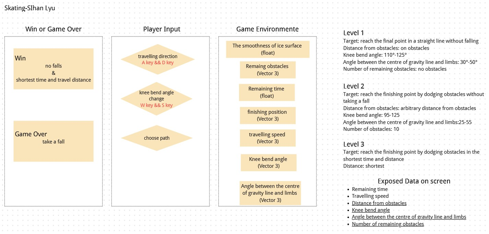

⛸ A Skating Novice
Learn to skate — not by walking on ice, but by mastering posture, speed, and the frozen surface beneath you.
▶ Play the GameGame Idea
What if skating wasn't just pressing buttons — but actually feeling what makes a skater stable or fall?
I joined a beginner skating lesson and realized that things like your posture, the smoothness of the ice, and other people all influence whether you can skate safely. This game lets you experience that: steer across a real ice rink, control your knee bend, feel the ice change under your blades, and learn why experts don't skate like they're walking.
Core Learning Shift
Skating is just like walking — stand up straight, move your feet, and you'll glide.
Result: high center of gravity, loss of balance, uncontrolled stops.
Good skating relies on speed control and keeping knees bent.
Result: stable posture, responsive turning, predictable braking.
Domain Knowledge
Skating is about the relationship between body posture, speed, and environment — not just moving your feet.
🦵 Knee Bend & Posture
Too straight: high center of gravity, easy to lose balance. Too bent: rigid movement, slow to turn. The sweet spot is slightly bent — compact, responsive, and stable.
🧊 Ice Surface Quality
Not all ice is equal. Smooth ice lets you glide fast. Rough or cracked ice increases friction, destabilizes your blades, and demands more control.
⚡ Speed vs. Control
Speed is useful, but uncontrolled speed on uncertain ice leads to falls. Skilled skaters adjust speed to match the surface they're on.
🚧 Obstacles & Routing
In a real rink, you navigate around people, cones, and ice holes. Planning a zigzag route is often safer than charging straight ahead.
System Design

System graph exported from Canva
Data Model
🌍 Environment Data
- Ice surface smoothness (varies by position)
- Venue obstacles (holes, cones, other skaters)
- Distance to goal
- Time remaining
🎮 Player-Controlled Data
- Steering direction (left / right)
- Knee bend angle (straight ↔ deeply bent)
- Arm spread (balance adjustment)
⚙ System-Calculated Results
- Travelling speed
- Stability / balance
- Fall detection
- Movement trail on ice
📢 Feedback Translation
- Blade friction sound → posture & speed indicator
- Ice trail → movement trajectory
- Balance / Speed / Knee meters → real-time state
Challenge Presets (3 Levels)
Level 1 — First Steps
Smooth ice, few obstacles, generous time. Learn the basics of posture and steering in a forgiving environment.
Level 2 — Navigate the Rink
Mixed ice quality, more obstacles, tighter time. You must read the ice surface and plan your route around hazards.
Level 3 — Race to the Finish
Rough ice, many obstacles, minimal time. Only efficient paths and expert posture will get you through.
Feedback Priorities
🔴 Immediate
Whether the player falls, and the blade friction sound generated by the movement.
🟡 Discovered Over Time
The ice trail shows your path — helping you plan better routes on subsequent attempts.
🔵 Audible
The sound of blades on ice changes with speed, stability, and surface quality.